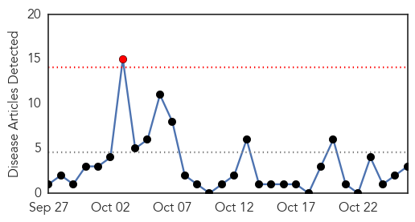
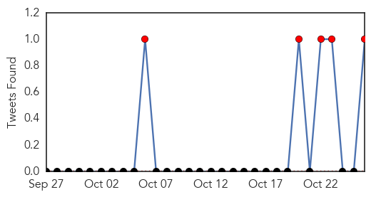
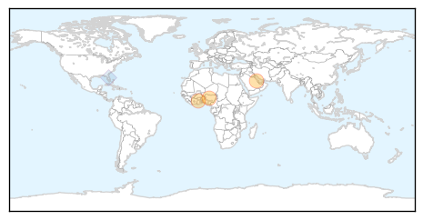
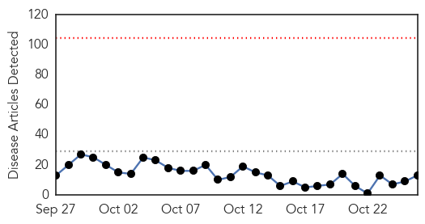
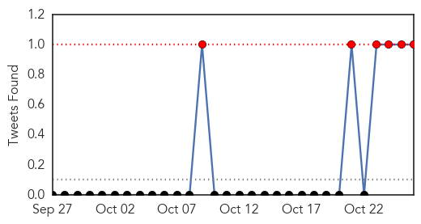

MERS
30-Day Web Trend
1 alerts, 0 warnings

30-Day Twitter Trend
3 alerts, 0 warnings

Article Locations
Article Confidences

Top Articles:
Top Tweets:
- 0.677
- AFD Blog `Saudi MOH: Hofuf MERS Hospital Cluster Increases MERS-CoV https://t.co/5rwekfe0bq
- 0.619
- AFD blog `Korea: Quarantine Lifted On 190 Contacts Of `Relapsed’ MERS Case' MERS-CoV https://t.co/e7hHsUF8oK
Dengue Fever
30-Day Web Trend
0 alerts, 0 warnings

30-Day Twitter Trend
2 alerts, 2 warnings

Article Locations

Article Confidences

Top Articles:
- 0.987
- Dengue count in Capital at 14,000 but hospital beds empty
- 0.961
- Aggressive New Mosquitoes that Carry Deadly Diseases are Spreading Through California - Story
- 0.923
- Can Yelp Help? Health Officials Keep Track Of Food Poisoning Outbreaks Through Social Media
- 0.907
- Protein target to prevent dengue transmission identified
- 0.897
- Is it or is it not dengue?
- 0.880
- ‘Best facilities for dengue patients’
- 0.863
- Protein Target to Prevent Dengue Transmission Identified
- 0.800
- Can Yelp help track food poisoning outbreaks?
- 0.775
- Delhi Government Plans To Unleash GM Mosquitoes To Fight Dengue By Dr. Susmita Priyadarshini
- 0.745
- WHO supports NEMA’s relief efforts after Hurricane Joaquin
- 0.740
- Signs of dengue virus reservoir in China
- 0.534
- Children's health 'uniquely' affected by climate change, pediatricians say
- 0.502
- Prophylactic platelet transfusion ineffective in dengue patients
Top Tweets:
- 0.926
- Flavivirus news: Health Mela to focus on dengue, swine flu - The Statesman: The StatesmanHealth... https://t.co/1k7fnkGv3o pathogenposse